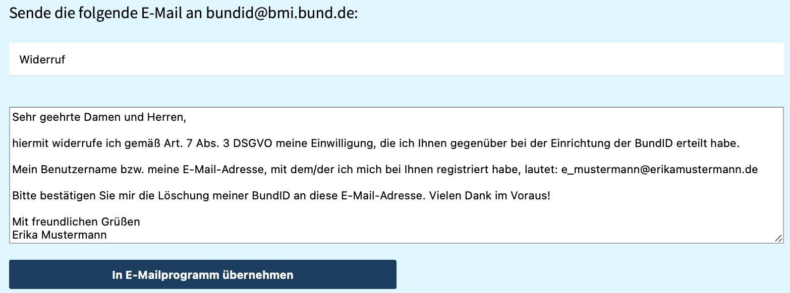
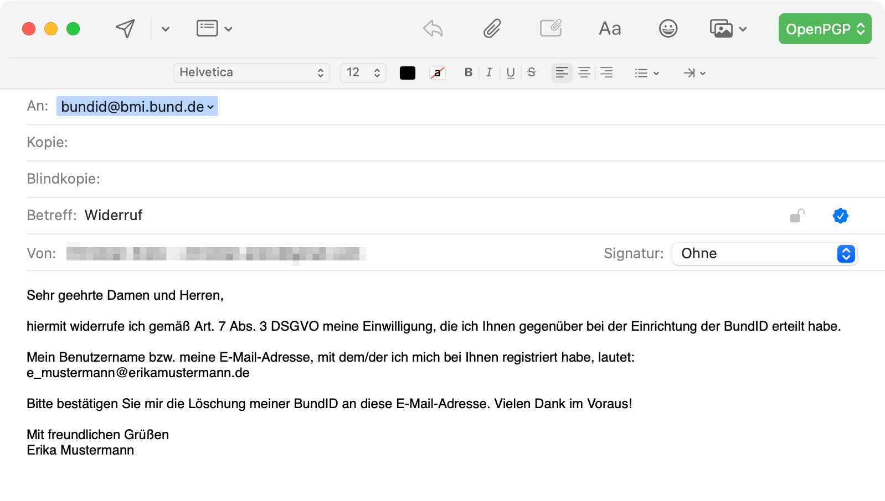

Information
Warum gibt es diese Seite?
Es kommt immer wieder vor, dass Du im Internet einen Nutzeraccount für etwas einrichten musst, was Du nur 1x benötigst. Du hast z.B. im Rahmen der Beantragung der Einmalzahlung der Eneriepreispauschale eine BundID angelegt. Falls Du die BundID nicht mehr benötigst, kannst Du sie hier bequem löschen lassen.
Was muss ich tun, um meine BundID löschen zu lassen?
Zunächst gibst Du Deine Daten in die Formularfelder ein:
Dann klickst Du auf "Widerrufstext erzeugen" und der Text wird für Dich generiert. Bevor Du diesen Widerrufstext an das BMI sendest, kannst Du noch mal in Ruhe überprüfen, ob alle Informationen stimmen. Falls etwas falsch ist, korrigiere es bitte. Achte insbesondere darauf, dass Du die E-Mail-Adresse angibst, die Du auch in der BundID verwendest. Im Idealfall, und um Rückfragen seitens des BMI zu vermeiden, sende Deinen Widerruf von genau dieser Adresse. Dann kannst Du sie auch schon auf die Reise schicken.
Geht das auch noch etwas komfortabler?
Aber natürlich! Du kannst, falls Du ein E-Mail-Programm auf Deinem Endgerät installiert und eingerichtet hast, auf den Button "In E-Mailprogramm übernehmen" klicken.

Dann öffnet sich eine neue E-Mail, und übernimmt den Text automatisch. Du kannst ihn vor dem Absenden noch einmal in Ruhe lesen und, wenn alles OK ist, schickst Du sie los.

Wer bekommt meine Daten?
Deine Daten bekommt nur das BMI, und nur dann, wenn Du sie per E-Mail an das BMI verschickst. Um Deinen persönlichen Widerrufstext zu erzeugen, wird er lokal in Deinem Browser erzeugt und ggf. in eine neue E-Mail eingetragen - das war's schon.
Werden meine Daten an den Server von widerruf200.de übertragen?
Nein. Die Daten, die Du hier eingibst, werden nicht an irgendeinen Server übertragen. Deine Daten werden lokal in Deinem Browser in den Text übernommen und ggf. in eine neue E-Mail eingefügt.
Wie genau funktioniert das?
Hinter der Schaltfläche "Widerrufstext erzeugen" ist ein Befehl hinterelgt, der die Daten aus den Datenfeldern in einen vorformulierten Text übernimmt und ihn lokal (also in Deinem Browser) anzeigt.
Hinter der Schaltfläche "In Emailprogramm übernehmen" ist ein Befehl hinterlegt, der Dein E-Mail-Programm dazu auffordert, eine neue E-Mail zu erstellen. Die Inhalte (Betreff und Text) der E-Mail werden dabei vorausgefüllt. Der Befehl nennt sich 'mailto:'. Weitere Informationen dazu findest Du hier.
Gibt es technische Voraussetzungen?
Nein. Nur wenn Du den Widerrufstext automatisch in eine neue E-Mail übernehmen möchtest, musst Du ein E-Mail-Programm installiert haben. Falls Du Deine E-Mails nur über die Webseite Deines E-Mail-Anbieters abrufst und verschickst, gehst Du aber nicht leer aus. Du kannst den Text einfach kopieren und in Dein E-Mail-Proramm einfügen.
Kann ich mir ganz genau ansehen, was im Hintergrund passiert?
Ja, natürlich. Der gesamte Code der Webseite ist auf GitHub unter XXXX veröffentlicht.
Gilt meine E-Mail als Widerruf?
Ja, natürlich. Laut den Datenschutzhinweisen des BMI (abrufbar hier) kannst Du Deine Einwilligung, die Du im Kontext der BundID erteilt hat, widerrufen. Ein Widerruf kann praktisch in jeder Form mitgeteilt werden. Insbesondere, wenn Du Deinen Widerruf von der E-Mail-Adresse verschickst, die auch in Deiner BundID hinterlegt ist, ist der Widerruf eindeutig Dir zuordenbar und es dürfte keine Rückfragen geben.
Aber, ist die BundID nicht total praktisch für viele andere digitale Verwaltungsleistungen?
Ja, es gibt bereits einige Anwendungsfälle. Wenn Du Deine BundID weiterhin benötigst, solltest Du sie nicht löschen.
Stand: 22. März 2023